Study of the Domain
Idea
This project explores the paratext of the book The neverending story written by Michael Ende and first published in 1979. The project was inspired by my thesis research, in which I analyze different editions of the novel in order to see how the changes in its material form influence the reading experience.
The theoretical framework of this research is the concept of paratext, as it is explained by Gerard Genette in his book Seuils (1987). Paratext refers to the material that surrounds a published text and is commonly divided between peritext and epitext. The peritext consists of the elements inside the volume (such as title, preface, page numbers), the epitext comprises elements outside the volume (such as interviews, posters, letters, ecc…).
In recent years there have been many studies that focused on the relationship between the paratext and the new technologies that changed our reading habits. Of note is how online metadata mirrors traditional paratextual functions when marketing or representing a book online. The paratextual instance in which this is more evident is the frontispiece; the information here collected – traditionally classified as peritext – when integrated into a Linked Open Data system, shifts the boundaries of the epitext. Following these digital link paths allow readers to know a great deal of the book before even reading it, which inevitably impacts our reception of the text itself.
The neverending story was chosen as the subject of this project because of its relevance in both knowledge organization and knowledge representation. As previously mentioned, the transformation of the data inside the frontispiece into Linked Open Data offered the opportunity to explore the new boundaries between peritext and epitext. Furthermore, it is a peculiar case of an adaptation that has become much more famous than the original novel, starting the production of new epitextual entities that reference the film rather than the book itself. Regarding knowledge representation, the changes in the unique physical and typographical materiality offered the perfect example of the importance of how a digital edition is rendered, demanding a precise digitization of the resource.
A final note: in alignment with the executors of Michael Ende’s estate, I explicitly distance myself and this project from any recent political misappropriation of the book and its characters.
Summary of the novel
The Neverending Story follows Bastian Balthasar Bux, an outcast boy who steals a magical book called The Neverending Story. Hiding in his school’s attic, he starts reading the novel that talks about a magical realm called Fantàsia which is being consumed by an entity called "The Nothing". During his reading though strange things happen, he starts to hear his own “real” voice called inside the story. This overlap between Bastian’s reality and the fictional world of Fantasia is represented through the use of different typographic colours in the original edition. In the second half of the book, Bastian is called inside the world of Fantàsia through the use of a magic book, called The neverending story. This plot, already metadiegetic, generates a metadiegetic loop for the fact that the characteristics of the two volumes described inside the story match, in the first edition, the physical and typographical characteristics of the real book held by the extradiegetic reader.

Entities
The entities chosen for this project can be organized into two main groups, classified with the terms of peritext and epitext. The first five entities are taken directly from the frontispiece of the physical first german edition held inside the Biblioteca Salaborsa in Bologna (see image above). The other entities, representing the epitext, are adaptations or linked to adaptation of the book. This selection demonstrates how, within the Semantic Web, peritextual and epitextual entities spanning across different media can be seamlessly interconnected and linked to global data networks.
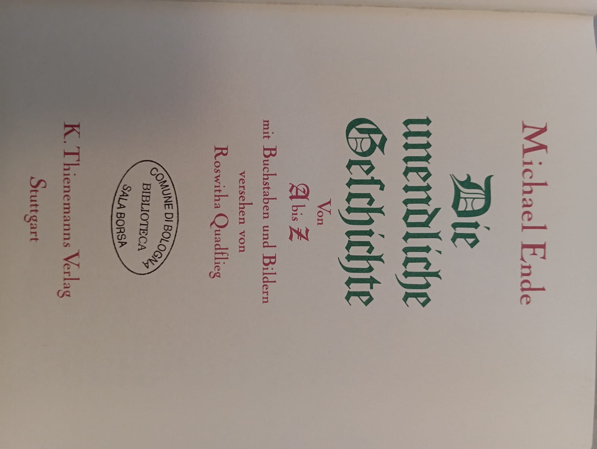
Die unendliche Geschichte
The first german edition of The neverending story, held at the Salaborsa library.
Michael Ende
German author (1929-1995) known for his children’s novels, including Jim button and Luke the Engine Driver, Momo and The neverending story.
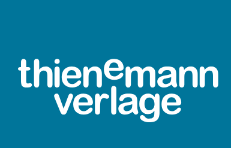
K. Thienemanns Verlag
German publishing house founded in 1849. It published The neverending story and other major works by Michael Ende.
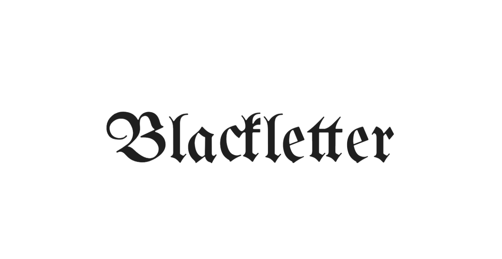
Blackletter
Typographic script created in the 12th century and one of the first to be used in the printing era. Used in the first german edition of the novel.
Biblioteca Salaborsa
A public library in Bologna, Italy, founded in 2001 which holds the 1979 edition of the novel.
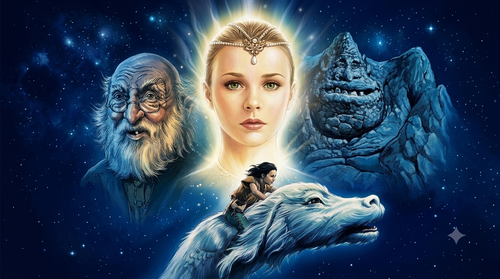
The neverending story
The iconic 1984 fantasy movie. While it achieved commercial success, Michael Ende famously disowned the production due to creative differences.
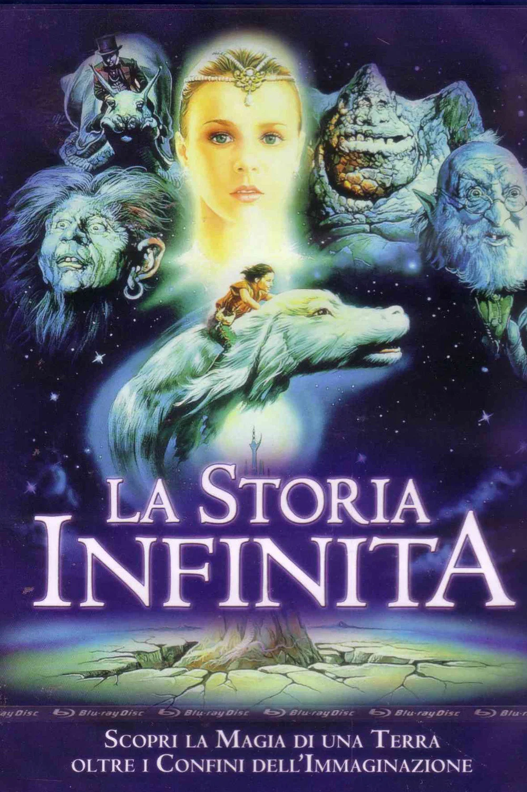
La storia infinita
The official promotional poster for the italian release of the film.
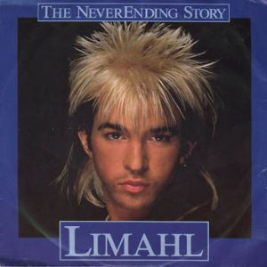
The neverending story
The main song of the film’s original soundtrack, achieved independent global success.
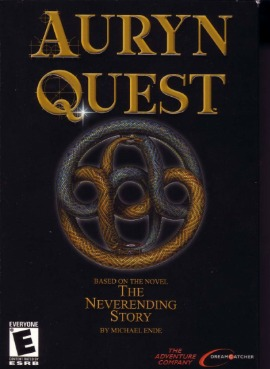
The neverending story part 1 - Auryn quest
A PC videogame released in 2002 and based on the book. The second part was never developed.
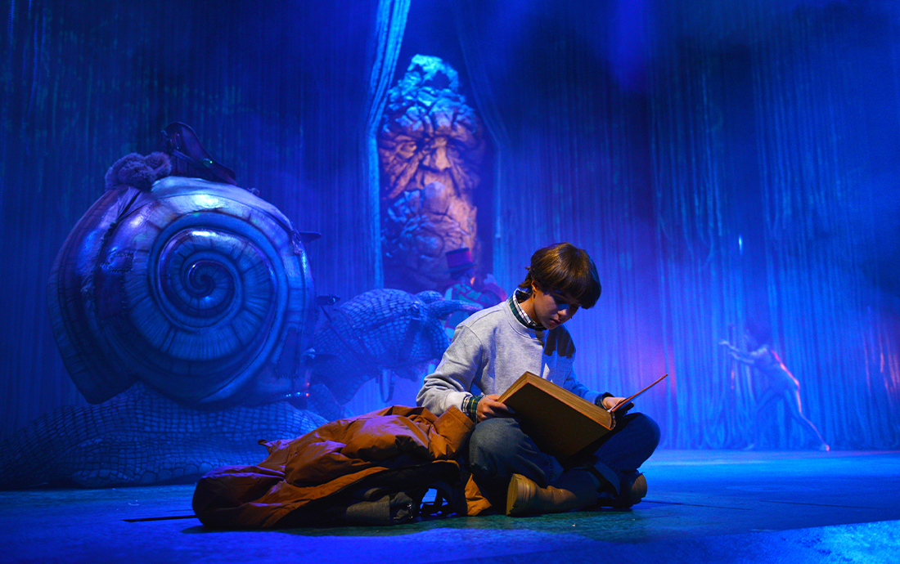
La historia interminable
A musical theater performance scheduled for September 2026 at the Teatro Calderòn in Valladolid, Spain.
Knowledge Organization
Metadata analysis
The first activity carried out was investigating the metadata standards used by the sources of my chosen entities. I quickly realized that, since most of the chosen entities are not physical manifestations, except for the book and the movie DVD, I did not have the metadata standards from traditional providers organizations. Instead, I had to rely on the metadata standards of the sources for the authority files. However, in most cases, I subsequently supplemented this metadata information by applying the standards that seemed more suitable to the nature of the entity.
| Item | Type | Manifestation | Source / Provider | Metadata Standard (Source) |
|---|---|---|---|---|
| Die unendliche Geschichte | Book | Biblioteca Salaborsa - Bologna | ISBD/MARC21/UniMarc | |
| Michael Ende | Person | - | Virtual International Authority File (VIAF) | MARC21 Authority / VIAF |
| Thienemann Verlag | CorporateBody | - | Deutsche Nationalbibliothek (DNB) | GND |
| Blackletter | Conceptual Object | Typeface | Getty Research Institute (AAT) | Getty AAT / SKOS |
| Biblioteca Salaborsa | Organization | - | Anagrafe delle Biblioteche Italiane (ICCU) | EAC-CPF |
| The Neverending Story (movie) | Media | Movie | Biblioteca Salaborsa - Bologna | ISBD/MARC21/UniMarc |
| La storia infinita (poster) | Artwork | Poster | The Movie Database (TMDb) | schema.org |
| The Neverending Story (song) | Track | Digital | Wikidata | Wikidata Ontology / Custom Metadata |
| La historia interminable (theater Event) | Event | Performance | Teatro Calderòn - Valladolid | schema.org / Custom Event |
| The Neverending Story Part I (videogame) | Media | Videogame | RAWG Video Games Databases | schema.org /Custom Metadata |
Theoretical model
I constructed the theoretical model around the concept of the Neverending Story. The narrative work itself serves as the central entity, rather than the physical manifestation of the book held in Biblioteca Salaborsa. To facilitate a smooth transposition into the conceptual model, I created the model already using triple statements in natural language, following the subject-predicate-object statements.
I enriched the map with specific information that could either define the nature of each entity or establish relationships between them. For instance, I chose to make explicit a wide range of geographical links because it is vital to studying Michael Ende’s work in a comparative perspective.
In the graph I chose to visually distinguish my core 10 entities, main entities linked to them, external link to the main authorities' sources and the literal statements.
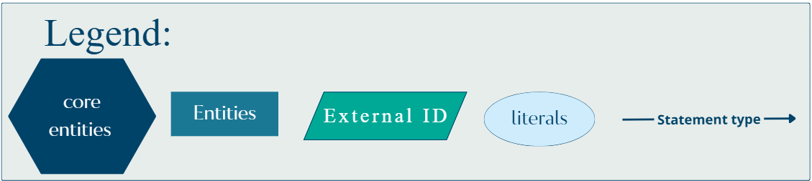
Theoretical Model Graph
Hover over the image to inspect the complete map structure
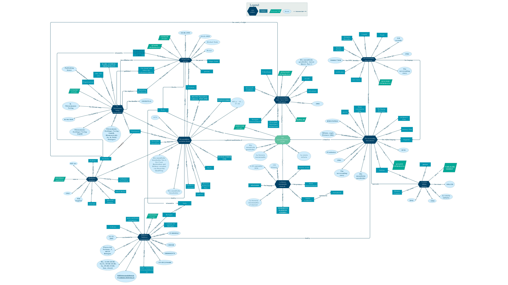
Conceptual model
The conceptual model serves as an abstraction of the theoretical model, enabling the information to subsequently become part of the Semantic Web.
Project base namespace namespace URI: https://agnepesa-art.github.io/The-neverending-story-project/
While I tried to prioritize domain-specific schemas aligned with the entity's metadata standards, in most cases these schemas were insufficient on their own and needed to be enriched with alternative vocabularies chosen for their relevance in that specific resource description. For instance, while BIBFRAME, the Music Ontology, and the GND Ontology were almost sufficient to describe the book, the theme song, and the publisher, the remaining entities required a combination of Schema.org and Dublin Core (DC), alongside the FOAF ontology to model authorship data.
tns:bannedBy and tns:bannedIn.
Conceptual Model Graph
Hover over the image to inspect the mapping links
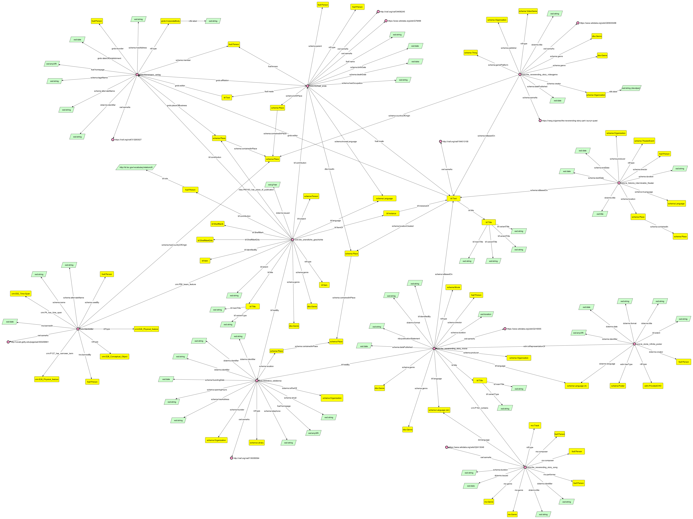
Namespaces used in the Conceptual Model:
Knowledge Representation
RDF production
Starting from the conceptual model map, I created an RDF dataset serialized in Turtle format. Instead of using Python, I wrote every triple by hand, which allowed for meticulous attention to detail. The vocabularies were derived directly from the conceptual model; as was done in that map, I used costume URIs for the core entities and some concepts more relevant to the project. Specifically, I used ontologies such as Dublin Core (dcterms), BIBFRAME, Schema.org, and CIDOC-CRM (crm) for the predicates, while for entity disambiguation I linked the URIs to authority resources such as VIAF (for people), Wikidata, and Geonames (for places). To validate the file I used the W3C validation service.
Text analysis
I chose to start encoding from the frontispiece page from which the entire project had started. This provided an excellent opportunity to learn how to create a digital edition of a physical book page and to digitally describe various textual phenomena. As part of my ongoing thesis project, I expanded this work to encode two more frontispieces: one from the first Italian edition published by Longanesi, and another from the economic one published by Salani. Furthermore, I chose to encode an internal page inside the Longanesi edition. This specific page is important for two main reasons. First, it features the color variations that happen throughout the novel to create a distinction between the “real world” and the world of Fantàsia. Second, it represents one of the two moments of the book in which the metanarrative aspect comes more to life: there is an internal description of the book that corresponds precisely to the book in the hands of the extradiegetic reader.
TEI/XML document
The first step was to encode these pages within a single TEI/XML document, enriched with external authority links that follow the same standards established before. Specifically, I used VIAF to reference people, Geonames for places, both Wikidata and the Getty vocabulary to reference the typographic concepts. These had to be precise given the metadiegetic significance of the book’s physical description within the narrative itself. The document was subsequently validated using the TEI by Example Validator.
From XML to HTML
In order to transform my TEI document into a browsable HTML file, I produced a XSLT stylesheet. This file defines the rules for identifying XML nodes in the source document, specifying how to manipulate them, and rendering them into the new HTML file. Starting from the root element, I have matched all the elements inside the TEI to map them to the HTML structure. The content on the HTML page is organized into clearly differentiated paragraphs and indexes, featuring direct links to the Authority File. In order to keep the file more clean and because of the importance of the physical rendition of the page, the XSLT file contains only the structural and semantic transformation; while all the visual aspects have been delegated to a CSS file. Both of these files were developed with the assistance of Google Gemini, as was suggested in class.
Note on the typefaces: in order to represent the frontispieces in the most similar way possible to the original pages, I imported in the CSS file the fonts directly from Google fonts. However, since the Arnold Boeklin typeface used in the italian edition was not available, I opted for Amarante, as its aesthetic closely mirrors the original Art Nouveau style. Once I was satisfied with the XSLT file, I processed it alongside the original XML file using Freeformatter to generate the final, browsable, HTML page, View Digital Edition.
From XML to RDF
The goal of the transformation of the TEI/XML file into an RDF file was to convert the data from its original hierarchical structure to a graph-based structure, which is characteristic of Linked Data. As I did for the RDF dataset, even this transformation was done writing the turtle statement by hand. Every relevant piece of information was mapped and linked with properties from standard vocabularies like dcterms:creator or foaf:name. It was necessary to create and assign new unique URIs for identification different from the one used in the RDF file. Following this, the syntax of the files was checked for correctness using the W3C validation service.
About the Project
This project was realized by Agnese Pesaresi, student of the master’s degree of Italianistica e culture letterarie europee, for the final examination of the course Information science and cultural heritage, a.a. 2025/2026.